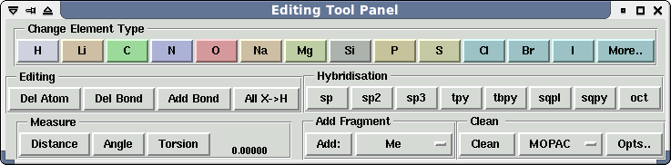
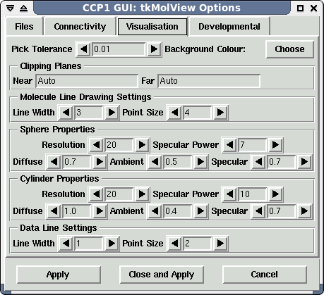

- Start - animate the selected vibration.
- Stop - stop the animation.
- Number of Frames - this is the number of still images that will be concatenated to create the animation.
- Amplitude - this determines the size of the vibration: the distance from the equilibrium point of the vibration to its apex.
- Frame Delay - the time-step between each frame that is concatenated to create the animation.
- The animation tool brings up a set of controls that can be used to display a movie by cycling through the sequence of images that have been loaded into the CCP1GUI. There are buttons to 'play' the sequence in a loop, go to the first or last frame, or move forward or backwards a frame at a time. The animation tools are displayed below:
- The animation tool is particularly useful if you have carried out a geometry optimisation under GAMESS-UK, as the geometry of the molecule at each stage of the optimisation is saved to the punch file. Using the animation tools, a movie showing the progression of the geometry optimisation can be displayed.
- Show All and Hide All affect the visibility of all graphical representations.
- Changes the origin for viewing and rotations of the centroid of the selected atoms.
- The info menu brings up a list of options to print out select information on the molcule. The options are:
- Coordinate List - a list of all the coordinates of the atoms within the selected molecule.
- Bond Length and Angles - a list of all bond lengths and angles for the selected molecule.
- Contacts to Selected Atoms - a list of all the atoms that are close enough to be considered in contact with the selected atoms.
- The compute menu is used to select a program with which to run a calculation on the molecule. Currently, the GUI has control interfaces for GAMESS-UK, Mopac and Chemshell. For help relating to the control window for a particular program, press F1 when the window is displayed.
- The Shell menu is used to open an IDLE (Integrated Development Environment) Python shell - assuming you have IDLE installed. IDLE is included with most Python distributions, but if for any reason you don't have it, it is available from: http://www.python.org/idle
- When opened from within the GUI, IDLE provides a powerful tool with which to interact with the GUI. The GUI Python objects can be operated on directly and information about them displayed.
- It is also possible to write and run scripts to carry out complex operations.
- More help on this is to follow.
- When it is first displayed, the upper half of the panel displays a selection of elements from the periodic table. To change the element type of an atom in the main window, select the atom with the mouse (so that a yellow square appears over it) and then click on the button representing the element type you would like the atom to be changed to.
- If the element you are after isn't displayed in the selection, click on the 'More...' button to display a full periodic table. To shrink the window back down so that it only displays a small selection of elements, click on the 'Short Table' button.
- To delete an atom, just select it with the mouse and click on the "Del Atom" button.
- To delete a bond, select the atoms on either side of the bond and click on the "Del Bond" button.
- To add a bond connecting two atoms, select the two atoms you wish to connect and click the "Add Bond" button.
- When a new molecule is created (using File -> 'New Molecule') or new atoms are added to the molecule (as described below) the atoms at the end of the bonds are not assigned to any element type. To convert them to hydrogen atoms, click the 'All X->H' button.
- To add bonds to an atom of a molecule, you need to change the hybridisation of the atom allow extra bonds to be added. To do this, select the atom and then click on a hybridisation scheme from the 'Hybridisation' section of the Tool Panel.
- The available options are:
- sp = sp
- sp2 = sp2
- sp3 = sp3
- tpy = trigonal pyrimidal
- sqpl = square planar
- sqpy = square pyramidal
- oct = octahedral
- Changing the hybridisation will add however many generic atoms your hybridisation scheme permits. You may then change their type individually or convert them all to hydrogens as described above.
- To speed up the construction of large molecules, the GUI supports the ability to add molecular fragments to a given atom. This is controlled through the Add Fragment part to the bottom right of the Tool Panel. To add a molecular fragment, select the atom to which you would like to add the fragment in the main window, select the desired fragment from menu on the right hand side of the Add Fragment frame in the Tools window and then click Add. Supported molecular fragments are:
- Me = methyl
- Pr = propyl
- t-Bu = tertiary butyl
- CO = carbon monoxide
- Bu = butyl
- eta Bz = η (π-bound) benzyl
- eta Cp = η (π-bound) cyclopentadienyl
- i-Bu = iso butyl
- eta Ethylene = η (π-bound) Ethylene
- i-Pr = iso propyl
- Et = ethyl
- Py = phenyl
Vibrations
If the one of the Frequencies options (finite difference or analytic) have been selected from the Properties Tab in the GAMESS-UK widget, then the vibrational frequencies of the molecule will be calculated, and the individual frequencies listed under the Views menu. To view a vibration, select the vibration from the views menu and a dialog box like the one below will be displayed:
The first few tools are the same as those for the Adjust Molecule View Tool. The additional vibration-specific tools are contained in the Animation box. These are:
Animation...
Show/Hide All
Centre on Selected
Info Menu
Compute Menu

Shell Menu
The Editing Tools Window
Changing the element type
Deleting atoms or bonds and deleting bonds
Converting generic atoms to Hydrogen Atoms
Adding atoms and bonds to a molecule
Adding molecular fragments to a molecule
Edit Options Menu
Files
- At present, there are no editable attributes available here.
Connectivity
Connection Parameters
The parameters here determine how the gui decides if two atoms are bonded (assuming that the connectivity has not been specified in the input file). The formula that is used to determine bonding is:
rij < scale * (rcov(i) + rcov(j)) + tolerance
where rij is the distance between the two atomic centres, rcov(n) the Van der Waals radius of the atom, scale the radius scale factor and tolerance the tolerance.
- Radius scale - this determines the radius scale in the above formula.
- Tolerance - this determines the tolerance in the above formula.
Non-bonded Connection Parameters
The parameters here determine how the gui decides if two non-bonded, but adjacent atoms, are in contact with each other. This determined using the same formula as for bondeded atoms and the same parameters are adjustable.
Visualisation

The visualistion options here permit the user to define exactly how the GUI wil represent the various objects that it draws.
- Background Colour - clicking on the 'Choose' button will bring up an colour editing widget to change the background colour of the GUI.
- Pick Tolerance - this allows you to change how close you have to place the mouse pointer to an object in order to be able to select that object.
- Sphere Properties - the options in this box determine the surface properties of the spheres and how they interact with the light. More later...
- Cylinder Properties - the options in this box determine the surface properties of the spheres and how they interact with the light. More later...
Developmental
- At present, there are no editable attributes available here. The Editing Tool Panel is used to change various properties of the molecule displayed in the main window.
The Edit Coordinates Window
- This can be used to manually edit the coordinates of the atoms in a molecule using either internal (displayed as a Z-matrix) or Cartesian coordinates. It is also possible to mix and match the two.
- The coordinates window at the top of the Edit Window is a table displaying the coordinates. Each row corresponds to an individual atom. The table below shows the meaning of each of the columns in this panel for Z-matrix format and Cartesian coordinates.
| Title | Cartesian | Zmatrix |
|---|---|---|
| i | A number serving as a unique identifier for the atom | Same as for Cartesians. |
| Sym | The chemical Symbol for the atom - a number may be appended to this to help identify the atom. | Same as for Cartesians. |
| i1 | Unused | The first atom to which this atom is connected. |
| x/r | The x-coordinate of the atom in Angstroms | The distance of this atom from the atom specified in i1. |
| i2 | Unused | The second atom to which this atom is connected. |
| y/theta | The y-coordinate of the atom in Angstroms | The angle between this atom and the atoms identified in columns i1 and i2. |
| i3 | Unused | The third atom to which this atom is connected. |
| z/phi | The z-coordinate of the atom in Angstroms. | The dihedral angle between this atom and those identified in the fields 1i,i2 and i3. |
| connections | The other atoms to which this atom is connected. | Unused |
Input Line
- Values in the coordinates window cannot be edited by directly. However, by clicking on the row corresponding to an atom in the coordinates window (or clicking on the atom in the main window), the values for that atom appear in the Input Line fields headed "Enter Coordinate values" that sits below the table. By clicking in a field, the value can then be edited.
Variables
- The Variables field shows any values that are specified as variable within the coordinates window.
Error Output
- If there is a problem with any of the coordinates that have been entered, an error message will be displayed here.
File Menu
Save Zmatrix
- Save the coordinates to a simple text file with the extension .zmt
Load Zmatrix
- Load coordinates from a file.
Reload from Graphics Window
- Update the coordinates window with the coordinates from the molecule displayed in the main window.
Edit Menu
Select All Atoms
- This selects and highlights all of the atoms specified in the coordinates window - the corresponding atoms in the main window will also be highlighted.
Insert Atoms
- This opens up a blank Input Line so that the coordinates for a new atom can be added.
Copy Atoms
- The values for the specified atoms will be copied into a buffer ready for pasting.
Cut Atoms
- The atoms will be removed from the coordinates window, but the values will be copied into a buffer ready to be pasted.
Paste Atoms
- Paste the coordinates of any atoms that were saved into the buffer into the table.
Delete Atoms
- Delete the selected atoms, but don't save their values.
r,x -> var
- Specify the value for x-coordinate or r as a variable (this value will then be displayed in the 'Variables' window).
theta,y -> var
- Specify the value for y-coordinate or theta as a variable (this value will then be displayed in the 'Variables' window).
phi,z -> var
- Specify the value for z-coordinate or phi as a variable (this value will then be displayed in the 'Variables' window).
all -> var
- Specify that all the selected values should be variables.
Select All Variables
- This selects all of the variables displayed in the 'Variables' window.
Delete Variables
- Remove a value from the variables window and specify it as a constant.
Convert Menu
Reorder Atoms
- Not active at present
AutoZ
- Not active at present.
Convert Selection to Z-Matrix
- Convert a selection displayed as Cartesian to be displayed in Z-matrix form.
Convert Selection to Cartesian
- Convert a selection displayed as Z-matrix to be display in Cartesian form.
Calculate Menu
Auto Recalc
- This toggles whether the coordinates should be recalculated as each change is made or whether the calculation should wait until 'Recompute Now' is selected.
Recompute Now
- Recompute the Z-matrix.